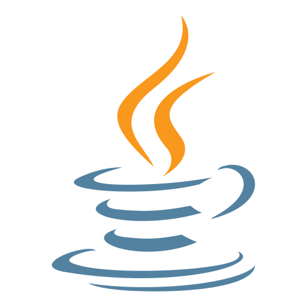

Front-end
- React
- JavaScript
- HTML e CSS
Desenvolvedor Full Stack especializado em APIs, sistemas web e solucoes reais para negocios
Sou Matheus, estudante de Engenharia de Software e desenvolvedor com foco em resolver problemas de forma pratica. Gosto de transformar ideia em projeto funcional, conectando interface, regras de negocio e banco de dados com foco em resultado real.
Foco atual
Java, Golang, React, APIs, automacao e projetos com impacto real no dia a dia.
Objetivo
Apresentar experiencia tecnica com mais clareza para recrutadores e parceiros.
Stack organizada

JavaFormacao continua
Como penso como dev
Minha forma de construir e evoluir software e colocando a mao na massa. Gosto de comecar pelo essencial, fazer funcionar com clareza e depois refinar com mais estrutura, desempenho e organizacao.
Aprendo melhor criando projetos reais, enfrentando erros, ajustando detalhes e entendendo como cada decisao tecnica impacta o resultado final.
Uso tecnologias como Java, Go, React e PHP para construir solucoes uteis no dia a dia, sempre pensando em usabilidade, manutencao e valor real para quem vai usar.
Procuro evoluir um pouco a cada projeto, seja no codigo, no design, na logica ou na forma de resolver problemas com mais maturidade.
Portifolio organizado
Projetos que conectam interface, regras de negocio, autenticacao e persistencia de dados para entregar solucoes completas.
Sistema desenvolvido para apresentar minha experiencia de forma profissional, reunir projetos em um so lugar e facilitar conexao com recrutadores e clientes.
Sistema desenvolvido para otimizar a leitura de indicadores financeiros e apoiar decisoes com mais clareza em um contexto de operacao comercial.
Sistema criado para centralizar agendamentos e cadastro de usuarios, reduzindo controle manual e melhorando a organizacao operacional.
Sistema desenvolvido para reforcar a seguranca de acesso em aplicacoes web, com autenticacao mais confiavel e melhor controle de sessao.
Sistemas web precisam controlar acesso de forma segura, evitando autenticacoes frageis e fluxos confusos para o usuario.
Estruturei o projeto com API REST em Golang, camada de autenticacao com JWT, front-end em React e persistencia de dados em MySQL.
Implementei um fluxo de login com validacao de credenciais, emissao de token e controle de sessao para proteger rotas e melhorar a seguranca da aplicacao.
Usei JWT pela praticidade no controle de sessao, Golang pela performance e simplicidade da API, e React para deixar a experiencia de autenticacao mais fluida.
Aplicacao criada para facilitar a organizacao de tarefas do dia a dia com um fluxo simples, util e facil de manter.
Sistema desenvolvido para facilitar o acesso a medicamentos por pessoas com dificuldade de locomocao, conectando necessidade social a uma solucao digital pratica.
Muitas pessoas com dificuldade de locomocao encontram barreiras para pesquisar medicamentos e organizar pedidos com rapidez.
Planejei uma estrutura fullstack com interface web, regras de negocio no back-end e armazenamento de dados para sustentar pedidos e informacoes do sistema.
Desenvolvi um fluxo que conecta navegacao, consulta de itens, organizacao de pedidos e suporte funcional para tornar a experiencia mais simples e acessivel.
Combinei HTML, CSS e JavaScript para a interface, com PHP, Python e MySQL para a parte funcional, buscando uma base pratica, acessivel e facil de evoluir.
Vamos conversar
Disponivel para oportunidades como Desenvolvedor Full Stack. Se voce precisa de alguem para construir APIs, sistemas web e solucoes que resolvem problemas reais com clareza tecnica e foco no negocio, vamos conversar.